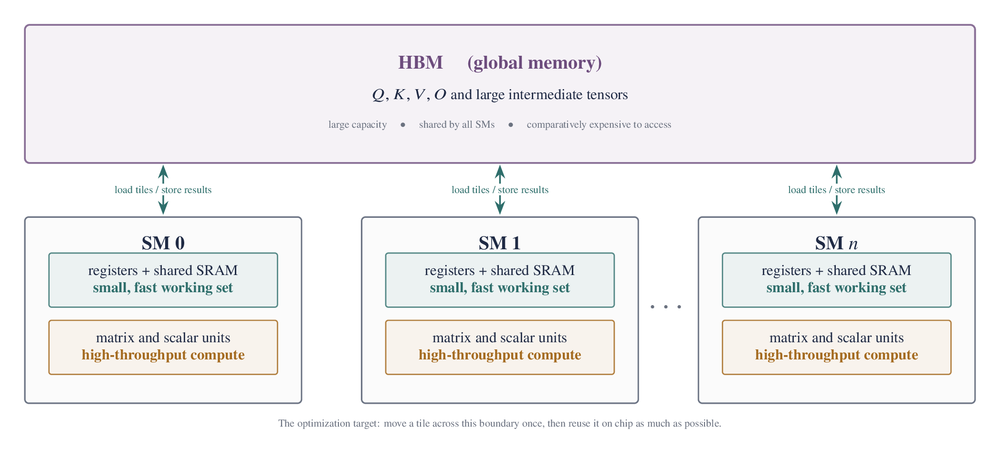
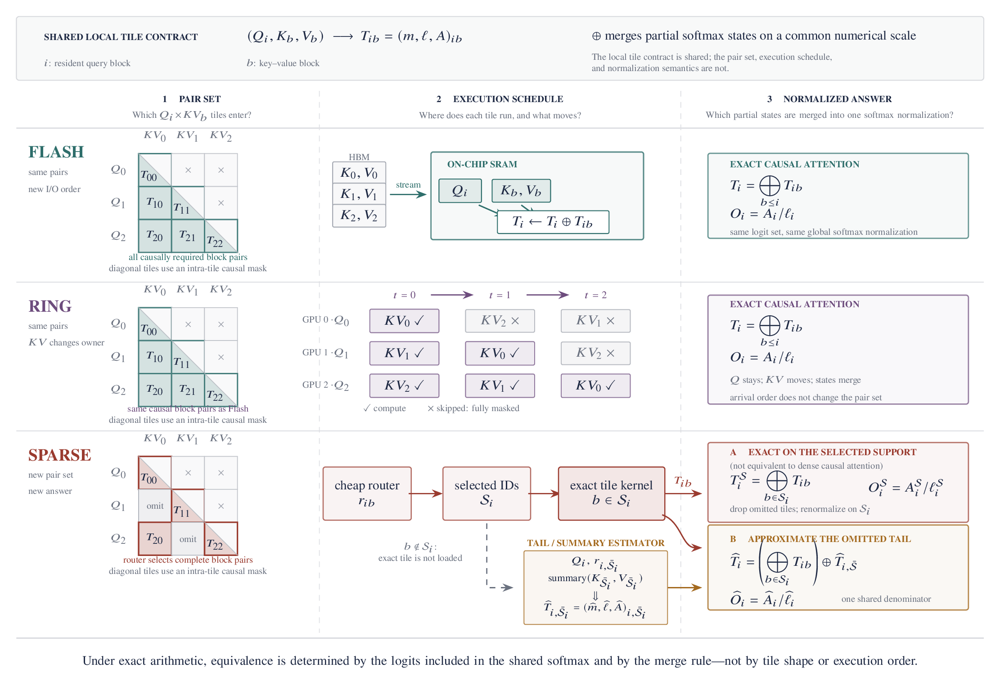
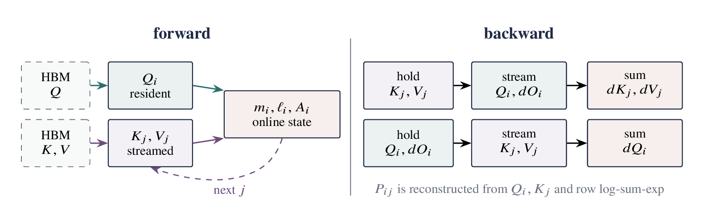

GPU Execution Model: why tiling matters
Modern GPUs are complicated machines: they have several cache levels, schedulers, memory controllers, and many kinds of execution units. That full diagram is unnecessary here. For attention, one abstraction does most of the explanatory work.
On the accelerators used to train large models, the large off-chip global memory is usually high-bandwidth memory (HBM), shared by many streaming multiprocessors (SMs). Each SM combines powerful arithmetic units with a much smaller amount of on-chip storage: a register file and shared memory implemented with SRAM. HBM is not slow in an absolute sense; its bandwidth is one reason GPUs are fast. But it is farther from the arithmetic units and more expensive to access than registers or shared SRAM. The useful picture is therefore one large, comparatively slow store connected to many compute-rich units with small, fast working spaces.

An SM therefore works on tiles. It loads a small tile from HBM, reuses that tile while it is nearby, and eventually stores a result back to HBM. The whole tensor need not fit on chip, but performance depends heavily on how often its pieces cross that boundary. Many GPU kernels are best understood as different schedules for this load–compute–store loop.
1. Dense Attention: materializing \(S\) and \(P\)
For one attention head, let \(Q,K,V\in\mathbb R^{L\times d}\). Standard attention is
Batches and multiple heads are omitted for now: they add indices but do not change the memory argument. Both \(S\) and \(P\) have shape \(L\times L\). There are \(L^2\) query–key pairs and each dot product costs \(O(d)\), so exact dense attention performs \(\Theta(L^2d)\) arithmetic.
How conventional attention materializes \(S\) and \(P\)
No SM needs to hold the entire score matrix. The matrix multiplications are themselves tiled: many SMs load small pieces of \(Q\) and \(K\), compute score tiles, and collectively produce \(S\). In a conventional three-stage implementation, however, the complete intermediate matrices still live in HBM between kernels:
- the \(QK^\top\) kernel computes score tiles and writes \(S\) to HBM;
- the softmax kernel reads \(S\), normalizes each row, and writes \(P\);
- the \(PV\) kernel reads \(P\) and multiplies it by \(V\) to produce \(O\).
Even this idealized baseline performs at least four \(L^2\)-sized intermediate transfers across the HBM boundary. The count deliberately omits the smaller \(O(Ld)\) reads and writes of \(Q,K,V,O\); a real softmax may also take additional passes. The point is not that the GPU cannot compute a large attention matrix. It can compute it tile by tile. The inefficiency is materializing \(S\) and \(P\) in HBM and moving them again for the next stage.
FlashAttention changes the schedule, not the answer
FlashAttention uses a more careful schedule. It keeps one query tile and a small running softmax state on chip, streams through key/value tiles, computes one temporary score tile, immediately folds that tile into the running normalization and output, and then discards it. After all key/value tiles have been visited, it writes the final output tile to HBM; training also saves only \(O(L)\) row statistics for backward. The full \(S\) and \(P\) matrices are never materialized there.
This does not make dense attention subquadratic: it still evaluates every allowed query–key pair and performs the same \(\Theta(L^2d)\) arithmetic. Nor is it an approximation. Its gain comes from eliminating the avoidable \(L^2\)-sized intermediate traffic. Online softmax is the algebraic trick that makes this streaming schedule exact; Section 2 will derive it.
This is the first meaning of a block: a tile chosen so that a useful working set fits on chip. Ring Attention and sparse attention reuse the same computational unit, but give “block” different system and mathematical roles.

FlashAttention: same pairs and same softmax, but a better memory schedule. Ring Attention: same pairs and same softmax, but KV blocks move across devices. Block-sparse attention: some pairs are not evaluated exactly, so the mathematical result changes unless their contribution is approximated elsewhere.
2. FlashAttention: exact online softmax
Take one query row. Instead of loading every logit at once, split its keys and values into blocks. Suppose earlier blocks have already been summarized by three quantities:
- \(m\): the largest logit seen so far;
- \(\ell=\sum_k e^{s_k-m}\): the softmax denominator measured relative to \(m\);
- \(A=\sum_k e^{s_k-m}V_k\): the unnormalized value sum on the same scale.
A new block arrives with logits \(s_k\) and values \(V_k\). Its largest logit may exceed the old maximum, so first choose the new common scale
The old sums were measured relative to \(m\), while the new block must be measured relative to \(m'\). Multiplying the old sums by \(e^{m-m'}\) simply changes units:
To see why this is exact, expand the rescaled old-state contribution:
The new-block terms in Equation (2) already use the same offset \(m'\), so the two pieces add to the exact numerator and denominator over everything seen so far.
The same reasoning can be stated as a merge invariant. After processing an index set \(\mathcal I\),
For disjoint sets \(\mathcal I\) and \(\mathcal J\), choose \(m'=\max(m_{\mathcal I},m_{\mathcal J})\), rescale both states to that common maximum, and add their \(\ell\) and \(A\) terms. The result satisfies the same invariant for \(\mathcal I\cup\mathcal J\). Thus \((m,\ell,A)\) is a mergeable sufficient statistic for the exact partial numerator and denominator—the same algebra Ring Attention will reuse across devices.
A three-logit numerical check
Suppose the first tile contains logits \(1000\) and \(999\), with scalar values \(2\) and \(4\). Direct exponentiation would overflow, but the tile state is
A second tile contains logit \(1001\) and value \(10\). The new maximum is \(m'=1001\), so the old state is multiplied by \(e^{-1}\):
Dividing \(A'/\ell'\) is exactly the softmax-weighted average of the three values at logits \(999,1000,1001\). The large common offset never appears in an exponential.
After rescaling, the old block and new block are expressed with the same exponent offset, so their sums can be added normally. After the final block,
Nothing has been dropped or approximated. The blocks are only a numerically stable way to merge pieces of the same softmax.

What the forward kernel keeps on chip
In a minimal Triton program, one program instance owns a query tile. The query tile and the three online-softmax states live for the whole loop; each key/value tile dies after one iteration. That lifetime—not a special approximation—is the essence of the memory saving.
Annotated minimal Triton forward
import torch
import triton
import triton.language as tl
@triton.jit
def _flash_fwd(Q, K, V, O, LSE,
stride_b: tl.constexpr, stride_h: tl.constexpr,
H: tl.constexpr, L: tl.constexpr, D: tl.constexpr,
SCALE: tl.constexpr, CAUSAL: tl.constexpr,
BM: tl.constexpr, BN: tl.constexpr):
tl.static_assert((D == 64) | (D == 128))
q_block = tl.program_id(0)
bh = tl.program_id(1)
b, h = bh // H, bh % H
base = b * stride_b + h * stride_h
im = q_block * BM + tl.arange(0, BM)
jn = tl.arange(0, BN)
kd = tl.arange(0, D)
q_ptr = Q + base + im[:, None] * D + kd[None, :]
q = tl.load(q_ptr, mask=im[:, None] < L, other=0.0)
# These states remain resident for the entire KV loop.
m = tl.full([BM], -float("inf"), tl.float32)
ell = tl.zeros([BM], tl.float32)
acc = tl.zeros([BM, D], tl.float32)
for start_n in range(0, L, BN):
n = start_n + jn
k_ptr = K + base + n[:, None] * D + kd[None, :]
v_ptr = V + base + n[:, None] * D + kd[None, :]
k = tl.load(k_ptr, mask=n[:, None] < L, other=0.0)
v = tl.load(v_ptr, mask=n[:, None] < L, other=0.0)
score = tl.dot(q, tl.trans(k)) * SCALE
visible = (im[:, None] < L) & (n[None, :] < L)
if CAUSAL:
visible &= im[:, None] >= n[None, :]
score = tl.where(visible, score, -1.0e6)
m_new = tl.maximum(m, tl.max(score, axis=1))
alpha = tl.exp(m - m_new)
p = tl.exp(score - m_new[:, None])
acc = acc * alpha[:, None] + tl.dot(p.to(q.dtype), v)
ell = ell * alpha + tl.sum(p, axis=1)
m = m_new
out = acc / ell[:, None]
o_ptr = O + base + im[:, None] * D + kd[None, :]
tl.store(o_ptr, out, mask=im[:, None] < L)
tl.store(LSE + bh * L + im, m + tl.log(ell), mask=im < L)
def flash_forward(q, k, v, causal=False):
assert q.is_cuda and q.is_contiguous()
assert q.shape == k.shape == v.shape
assert q.dtype in (torch.float16, torch.bfloat16)
B, H, L, D = q.shape
assert D in (64, 128)
o = torch.empty_like(q)
lse = torch.empty((B, H, L), device=q.device, dtype=torch.float32)
grid = (triton.cdiv(L, 64), B * H)
_flash_fwd[grid](
q, k, v, o, lse, q.stride(0), q.stride(1),
H=H, L=L, D=D, SCALE=D ** -0.5, CAUSAL=causal,
BM=64, BN=64, num_warps=4, num_stages=2)
return o, lseTileLang can express the same algorithm with explicit shared-memory buffers, fragments, copies, GEMMs, reductions, and pipeline annotations. The programming model changes; Equations (2)–(3) do not.
The same recurrence in compact TileLang form
import tilelang
import tilelang.language as T
@tilelang.jit(out_idx=[3])
def flash_tile(batch, heads, length, dim, causal,
input_dtype="float16", BM=64, BN=64,
stages=2, threads=128):
assert dim in (64, 128)
dtype = T.float16 if input_dtype == "float16" else T.bfloat16
scale = dim ** -0.5 * 1.44269504 # exp2 scale
shape = [batch, heads, length, dim]
@T.prim_func
def main(Q: T.Tensor(shape, dtype),
K: T.Tensor(shape, dtype),
V: T.Tensor(shape, dtype),
O: T.Tensor(shape, dtype)):
with T.Kernel(T.ceildiv(length, BM), heads, batch,
threads=threads) as (qb, h, b):
q = T.alloc_shared([BM, dim], dtype)
k = T.alloc_shared([BN, dim], dtype)
v = T.alloc_shared([BN, dim], dtype)
out = T.alloc_shared([BM, dim], dtype)
score = T.alloc_fragment([BM, BN], T.float32)
prob = T.alloc_fragment([BM, BN], dtype)
acc = T.alloc_fragment([BM, dim], T.float32)
m = T.alloc_fragment([BM], T.float32)
m_old = T.alloc_fragment([BM], T.float32)
alpha = T.alloc_fragment([BM], T.float32)
ell = T.alloc_fragment([BM], T.float32)
tile_sum = T.alloc_fragment([BM], T.float32)
T.copy(Q[b, h, qb * BM:(qb + 1) * BM, :], q)
T.fill(acc, 0)
T.fill(ell, 0)
T.fill(m, -T.infinity(T.float32))
end = (T.min(T.ceildiv(length, BN),
T.ceildiv((qb + 1) * BM, BN))
if causal else T.ceildiv(length, BN))
for kb in T.Pipelined(end, num_stages=stages):
T.copy(K[b, h, kb * BN:(kb + 1) * BN, :], k)
for i, j in T.Parallel(BM, BN):
qi, kj = qb * BM + i, kb * BN + j
valid = (qi < length) and (kj < length)
if causal:
valid = valid and (qi >= kj)
score[i, j] = T.if_then_else(
valid, 0, -T.infinity(T.float32))
T.gemm(q, k, score, transpose_B=True,
policy=T.GemmWarpPolicy.FullRow)
T.copy(m, m_old)
T.reduce_max(score, m, dim=1, clear=True)
for i in T.Parallel(BM):
m[i] = T.max(m[i], m_old[i])
alpha[i] = T.exp2((m_old[i] - m[i]) * scale)
for i, j in T.Parallel(BM, BN):
score[i, j] = T.exp2((score[i, j] - m[i]) * scale)
T.reduce_sum(score, tile_sum, dim=1, clear=True)
for i in T.Parallel(BM):
ell[i] = ell[i] * alpha[i] + tile_sum[i]
for i, j in T.Parallel(BM, dim):
acc[i, j] *= alpha[i]
T.copy(score, prob)
T.copy(V[b, h, kb * BN:(kb + 1) * BN, :], v)
T.gemm(prob, v, acc, policy=T.GemmWarpPolicy.FullRow)
for i, j in T.Parallel(BM, dim):
acc[i, j] /= ell[i]
T.copy(acc, out)
T.copy(out, O[b, h, qb * BM:(qb + 1) * BM, :])
return main3. FlashAttention Backward: recomputing \(P\)
Here \(L^2\) means memory that grows quadratically with sequence length, not the GPU's L2 cache. Start by keeping the complete forward chain in view:
The mask \(M\) is zero on visible pairs and \(-\infty\) on forbidden pairs. Let \(\mathcal L\) be the final loss, and use the common deep-learning shorthand
Thus \(dO\) is the upstream gradient—PyTorch's grad_output, not a small perturbation. Backward must turn \(dO\) into \(dQ,dK,dV\).
First pretend that forward saved the full \(P\)
For query \(i\), the output is \(O_i=\sum_jP_{ij}V_j\). A value vector \(V_j\) contributes to every query output, so its gradient collects all of those paths:
The scalar \(P_{ij}\) multiplies vector \(V_j\) inside \(O_i\), so its gradient is their inner product with the upstream direction:
If forward had stored \(P\), these two steps would be immediate. But \(P\) has shape \(L\times L\). FlashAttention deliberately does not write that full matrix to HBM, so backward must recover only the probability tiles it currently needs.
Deriving the row-softmax gradient
Softmax is row-wise. Fix query row \(i\), write \(p_j=P_{ij}\) and \(s_j=S_{ij}\), and temporarily suppress the row index:
Every \(p_j\) depends on \(s_k\) through the shared denominator, so every path contributes to \(ds_k\):
Restoring the row and column indices, define one scalar per query row:
The subtraction handles the coupling introduced by normalization. For example, if every \(dP_{ij}\) in a row equals the same constant \(c\), then \(D_i=\sum_jP_{ij}c=c\), so every \(dS_{ij}=P_{ij}(c-c)=0\). This is exactly right: because \(\sum_jP_{ij}=1\), assigning the same gradient to every probability creates no effective logit direction.
Why \(D_i\) does not require the saved probability row
The definition of \(D_i\) still appears to require \(P_i\). Substitute the value-mixture gradient \(dP_{ij}=dO_iV_j^\top\):
This removes the first apparent need for \(P\): a small preprocessing kernel computes \(D_i\) from the saved output \(O_i\) and upstream gradient \(dO_i\).
Reconstructing a probability tile without saving \(P\)
Computing \(dS_{ij}\) still requires the local probability \(P_{ij}\). Backward can cheaply recompute a score tile from \(Q\) and \(K\), but softmax normalization depends on all visible keys in that query row—not just the current tile. That missing row normalizer is exactly why forward deliberately saves LSE.
For the keys \(\mathcal A(i)\) visible to query \(i\),
The second equality is Equation (3): online softmax has already computed the stable row maximum \(m_i\) and rescaled sum \(\ell_i\). Saving their combined log-normalizer costs only one scalar per query row. Backward can then recover any unmasked probability directly:
Masked positions remain zero. For query rows \(I\) and key rows \(J\), the kernel recomputes only
From \(dS\) to \(dQ\) and \(dK\)
Once a probability tile has been reconstructed, backward computes \(dP_{I,J}=dO_IV_J^\top\), broadcasts the precomputed \(D_I\) across its key columns, and forms \(dS_{I,J}=P_{I,J}\odot(dP_{I,J}-D_I[:,\mathrm{None}])\). Since \(M\) does not depend on \(Q,K\), the remaining matrix-product gradients are
Putting the backward tile computation together
The preprocessing step computes \(D_i=dO_iO_i^\top\) once per query row. Each subsequent query–KV tile interaction then follows the same short chain:
- reload the current \(Q,K,V,dO\) tiles;
- recompute \(S=\alpha QK^\top+M\);
- load the saved row LSE and reconstruct \(P=\exp(S-\operatorname{LSE})\);
- compute \(dP=dOV^\top\) and \(dS=P\odot(dP-D)\);
- accumulate this tile's contributions to \(dQ,dK,dV\), then discard \(S,P,dP,dS\).
The extra \(QK^\top\) and exponential work replaces writing and rereading quadratic intermediates. On modern GPUs, that trade is usually favorable because matrix multiplication is fast while moving an \(L\times L\) tensor through HBM is expensive.
Backward must use the same scale and mask as forward. Otherwise LSE normalizes a different set of logits and the kernel computes the gradient of a different function.
The ownership conflict between \(dQ\) and \(dK,dV\)
| Gradient tile | Reduction direction | Race-free owner |
|---|---|---|
| \(dQ_I\) | All KV tiles \(J\) | One program owns query tile \(I\) |
| \(dK_J\) | All query tiles \(I\) | One program owns key tile \(J\) |
| \(dV_J\) | All query tiles \(I\) | One program owns value tile \(J\) |
The official Triton fused-attention tutorial resolves the opposing reductions with two logical traversals inside its backward kernel: a KV-owned traversal finishes \(dK,dV\), and a query-owned traversal finishes \(dQ\). This recomputes local \(S,P,dP,dS\) twice but avoids atomics. It is an implementation choice, not a law of FlashAttention: FlashAttention-2 instead uses KV ownership and atomically accumulates partial \(dQ\).
Runnable Triton backward: preprocess, dK/dV, then dQ
@triton.jit
def _flash_bwd_preprocess(O, DO, Delta,
stride_b: tl.constexpr, stride_h: tl.constexpr,
H: tl.constexpr, L: tl.constexpr, D: tl.constexpr,
BLOCK: tl.constexpr):
block = tl.program_id(0)
bh = tl.program_id(1)
b, h = bh // H, bh % H
base = b * stride_b + h * stride_h
rows = block * BLOCK + tl.arange(0, BLOCK)
dims = tl.arange(0, D)
o = tl.load(O + base + rows[:, None] * D + dims[None, :],
mask=rows[:, None] < L, other=0.0)
do = tl.load(DO + base + rows[:, None] * D + dims[None, :],
mask=rows[:, None] < L, other=0.0).to(tl.float32)
delta = tl.sum(o * do, axis=1) # D_i = <O_i, dO_i>
tl.store(Delta + bh * L + rows, delta, mask=rows < L)
@triton.jit
def _flash_bwd(Q, K, V, DO, DQ, DK, DV, LSE, Delta,
stride_b: tl.constexpr, stride_h: tl.constexpr,
H: tl.constexpr, L: tl.constexpr, D: tl.constexpr,
SCALE: tl.constexpr, CAUSAL: tl.constexpr,
BLOCK: tl.constexpr):
tile = tl.program_id(0)
bh = tl.program_id(1)
b, h = bh // H, bh % H
base = b * stride_b + h * stride_h
in_tile = tl.arange(0, BLOCK)
dims = tl.arange(0, D)
# Traversal 1: this program owns one KV tile.
cols = tile * BLOCK + in_tile
k = tl.load(K + base + cols[:, None] * D + dims[None, :],
mask=cols[:, None] < L, other=0.0)
v = tl.load(V + base + cols[:, None] * D + dims[None, :],
mask=cols[:, None] < L, other=0.0)
dk = tl.zeros([BLOCK, D], tl.float32)
dv = tl.zeros([BLOCK, D], tl.float32)
for start_m in range(0, L, BLOCK):
rows = start_m + in_tile
q = tl.load(Q + base + rows[:, None] * D + dims[None, :],
mask=rows[:, None] < L, other=0.0)
do = tl.load(DO + base + rows[:, None] * D + dims[None, :],
mask=rows[:, None] < L, other=0.0)
lse = tl.load(LSE + bh * L + rows, mask=rows < L, other=0.0)
delta = tl.load(Delta + bh * L + rows, mask=rows < L, other=0.0)
scores = tl.dot(q, tl.trans(k)) * SCALE
visible = (rows[:, None] < L) & (cols[None, :] < L)
if CAUSAL:
visible = visible & (rows[:, None] >= cols[None, :])
scores = tl.where(visible, scores, -1.0e6)
p = tl.where(visible, tl.exp(scores - lse[:, None]), 0.0)
dp = tl.dot(do, tl.trans(v)).to(tl.float32)
ds = p * (dp - delta[:, None])
dv += tl.dot(tl.trans(p.to(q.dtype)), do)
dk += tl.dot(tl.trans(ds.to(q.dtype)), q) * SCALE
tl.store(DK + base + cols[:, None] * D + dims[None, :], dk,
mask=cols[:, None] < L)
tl.store(DV + base + cols[:, None] * D + dims[None, :], dv,
mask=cols[:, None] < L)
# Traversal 2: the same program id now owns one query tile.
rows = tile * BLOCK + in_tile
q = tl.load(Q + base + rows[:, None] * D + dims[None, :],
mask=rows[:, None] < L, other=0.0)
do = tl.load(DO + base + rows[:, None] * D + dims[None, :],
mask=rows[:, None] < L, other=0.0)
lse = tl.load(LSE + bh * L + rows, mask=rows < L, other=0.0)
delta = tl.load(Delta + bh * L + rows, mask=rows < L, other=0.0)
dq = tl.zeros([BLOCK, D], tl.float32)
for start_n in range(0, L, BLOCK):
cols = start_n + in_tile
k = tl.load(K + base + cols[:, None] * D + dims[None, :],
mask=cols[:, None] < L, other=0.0)
v = tl.load(V + base + cols[:, None] * D + dims[None, :],
mask=cols[:, None] < L, other=0.0)
scores = tl.dot(q, tl.trans(k)) * SCALE
visible = (rows[:, None] < L) & (cols[None, :] < L)
if CAUSAL:
visible = visible & (rows[:, None] >= cols[None, :])
scores = tl.where(visible, scores, -1.0e6)
p = tl.where(visible, tl.exp(scores - lse[:, None]), 0.0)
dp = tl.dot(do, tl.trans(v)).to(tl.float32)
ds = p * (dp - delta[:, None])
dq += tl.dot(ds.to(q.dtype), k) * SCALE
tl.store(DQ + base + rows[:, None] * D + dims[None, :], dq,
mask=rows[:, None] < L)
def flash_backward(q, k, v, o, lse, do, causal=False):
B, H, L, D = q.shape
dq, dk, dv = torch.empty_like(q), torch.empty_like(k), torch.empty_like(v)
delta = torch.empty((B, H, L), device=q.device, dtype=torch.float32)
block = 64
grid = (triton.cdiv(L, block), B * H)
_flash_bwd_preprocess[grid](
o, do, delta, q.stride(0), q.stride(1),
H=H, L=L, D=D, BLOCK=block, num_warps=4)
_flash_bwd[grid](
q, k, v, do, dq, dk, dv, lse, delta,
q.stride(0), q.stride(1),
H=H, L=L, D=D, SCALE=D ** -0.5, CAUSAL=causal,
BLOCK=block, num_warps=4, num_stages=2)
return dq, dk, dvFlashAttention has now solved the quadratic-intermediate problem on one accelerator: score and probability tiles are streamed through a small on-chip working set instead of being materialized in HBM. It does not eliminate memory that grows linearly with the sequence, however. The \(Q,K,V\) tensors and training activations still grow with \(L\), so a sufficiently long sequence eventually exceeds one device's memory. The mergeable softmax state suggests the next step: keep a query block local, but stream KV blocks across devices rather than only from local HBM.
4. Ring Attention: rotating KV blocks across devices
This limit is becoming practical as training horizons grow far beyond ordinary document lengths. A long-running agent can accumulate tool traces, observations, actions, and memory into a trajectory approaching millions of tokens. Video expands even faster under patch tokenization. For illustration, 30 seconds of 1280-by-720 video at 24 frames per second produces
under 16-by-16 spatial patches and two-frame tubelets. This is an order-of-magnitude example, not a universal conversion: video VAEs, spatial and temporal downsampling, patch sizes, and tubelet sizes all change the actual token count. The systems problem remains the same once the resulting sequence no longer fits comfortably on one accelerator.
Ring Attention partitions that sequence across \(G\) devices. Device \(g\) keeps its local query block \(Q_g\) stationary. Its current \(K,V\) block is the moving object: the device computes attention between \(Q_g\) and that block, merges the result into its online-softmax state, and passes the KV block one hop to the next device. The blocks move in one direction around the ring rather than back and forth. After \(G\) steps, every query block has met every allowed KV block.
Each step uses the same merge rule in Equation (2). Communication changes the order in which KV blocks arrive, but exact partial softmax statistics can be merged in any block order. Ring Attention therefore extends the sequence across devices and overlaps communication with block computation; it does not reduce the total dense pair set by itself.
More formally, suppose two devices or two ring steps produce partial states \((m_a,\ell_a,A_a)\) and \((m_b,\ell_b,A_b)\) for disjoint KV blocks. Their associative merge is
Because this operator summarizes the union of two index sets, merging blocks in ring order or local-memory order produces the same real-arithmetic result. A causal implementation can skip blocks that lie entirely in the future and mask the one block that crosses the diagonal. Communication is useful only when sending the next KV block is overlapped by enough attention work on the current block; otherwise the exact mathematics remains correct but scaling stalls on the interconnect.
5. Sparse Attention: selecting fewer query–key pairs
FlashAttention gives us something useful beyond a faster dense kernel: it packages attention into \(Q\)-tile by \(KV\)-tile units. Dense FlashAttention still visits every allowed tile, but if an entire KV tile is unlikely to matter for a query tile, the schedule can omit it and avoid its memory loads and matrix multiplications altogether.
Why might this help on a long sequence? Attention is often concentrated rather than uniform. After softmax, a small number of tokens or blocks may carry most of the probability mass, while many distant tokens contribute almost nothing. As the context grows, computing every query–key pair becomes increasingly wasteful if only a small fraction materially changes the output.
There is an immediate catch: the important positions are unknown until the query is compared with the keys. Computing the full \(QK^\top\) matrix merely to decide what to skip would save nothing. Sparse attention therefore needs a selector (or router): a cheaper scoring mechanism that predicts which tokens or blocks deserve the full attention computation.
The selected items are then evaluated exactly with their full keys and values. For everything else, a method must make a second decision: drop it, preserve a coarse version through another path, or approximate its missing contribution. These are separate questions—where should exact computation go? and what should happen to what was not selected?
The approximation can now be stated precisely. For one query \(i\), let \(\mathcal A_i\) be all keys allowed by causal and semantic masks, and define \(s_{ij}=q_i^\top k_j/\sqrt d\). Dense attention is one fraction:
Partition the allowed keys into blocks \(B_1,\ldots,B_M\). This alone introduces no approximation:
The selector chooses an exact set \(E_i\), often a union of selected blocks and a mandatory local window. The omitted set is \(U_i=\mathcal A_i\setminus E_i\), so
This split reveals two possible errors. The selection error comes from failing to place important tokens in \(E_i\). The aggregation error comes from how the method handles \(N_{i,U}\) and \(D_{i,U}\) after selection. A good router does not answer the second question.
Why the sparse unit is usually a block
FlashAttention has already turned dense attention into a loop over query tiles and KV tiles. Let \(Q_a\in\mathbb R^{B_Q\times d}\) be one query tile and \((K_b,V_b)\) one KV tile. A dense kernel visits every causally allowed tile \(b\), computes
and merges the tile into the running online-softmax state \((m_a,\ell_a,A_a)\). Block-sparse attention changes the outer loop:
If \(b\notin\mathcal C_a\), the kernel can skip loading \(K_b,V_b\), skip the \(Q_aK_b^\top\) GEMM, and skip the \(P_{ab}V_b\) GEMM. This is why deleting a whole tile can produce real speed, whereas scattering zeros inside every tile usually does not: the dense tile still has to be loaded and multiplied.
With \(n_Q=L/B_Q\) query tiles, \(n_K=L/B_K\) KV tiles, and \(r\) selected KV tiles per query tile, the number of tile pairs falls from approximately \(n_Qn_K\) to \(n_Qr\). The selector is useful only if finding \(\mathcal C_a\) and gathering its KV blocks costs less than the skipped tile work.
Inside every selected tile, the computation is still ordinary FlashAttention. The sparse approximation lies in the tile schedule: under drop-and-renormalize, only selected tiles are merged into the online-softmax numerator and denominator. NSA, HiLS, and PISA keep the same blockwise execution unit but define additional paths for coarse information, hierarchical mass, or the omitted tail.
The selector must score something cheaper than the full \(QK^\top\) matrix. It may use a fixed block statistic, a learned compressed block, or a separate low-dimensional token indexer.
Fixed pooling: a cheap proxy, not the true block mass
For a mean-pooled block proxy, define
Let \(B=|B_b|\), and write the mean logit in block \(b\) as
What is the block’s “true score”? For one query, \(s_{ij}\) is token \(j\)’s logit before softmax, so \(e^{s_{ij}}\) is its unnormalized attention weight. The whole block contributes
To see when mean pooling is accurate, write each logit as its block mean plus a deviation:
If the logits inside the block are similar, every \(\epsilon_{ij}\) is close to zero. Then every \(e^{\epsilon_{ij}}\) is close to \(1\), so the last logarithm is close to zero. For equal-sized blocks, \(\log B\) is also the same constant. The exact block score is therefore approximately \(\bar s_{ib}+\log B\), and ranking by the pooled score \(\bar s_{ib}\) gives almost the same order.
The approximation becomes worse as the logits spread out. For small deviations, the omitted term is approximately
So mean pooling is reliable for a homogeneous block, but it can miss a block containing one unusually relevant token: exponentiation gives that token much more weight, while the arithmetic mean dilutes it among the other tokens.
DSA: a distilled per-token indexer
DSA treats selection as a teacher–student problem. Dense attention is the teacher; a lighter, token-wise lightning indexer is the student. Instead of using the expensive main-attention scores to choose tokens, the indexer projects each token into a cheaper indexing space and predicts which positions the teacher would consider important.
Each previous token \(j\) has one index key \(k^I_j\in\mathbb R^{d_I}\). Query \(i\) has \(H^I\) indexer query heads \(q^I_{i,a}\in\mathbb R^{d_I}\) and scalar weights \(w^I_{i,a}\). Their votes are combined into one score for token \(j\):
The indexer is therefore an attention-like scorer with fewer heads and a cheaper feature space than DSA's main attention computation. It is not a smaller attention layer. It has no value aggregation and produces no contextualized output; all indexer heads only vote on one token-ranking score, after which top-\(k\) returns the positions that the main attention should evaluate exactly.
The top-\(k\) operation is a discrete choice: small score changes usually leave the selected set unchanged, and crossing a selection boundary changes it abruptly. Ordinary backpropagation through membership therefore does not provide a useful training signal for the indexer. DSA supplies an explicit target instead.
During dense warm-up, the model still runs full attention. Let \(p^{(h)}_{ij}\) be its attention probability from head \(h\). DSA sums the probabilities across heads and normalizes them along the sequence to obtain one teacher distribution \(t_i\). The indexer is trained to match that distribution:
The teacher target is therefore not one particular attention head: it represents the total importance assigned to each token across all heads. After warm-up, sparse training activates top-\(k\) retrieval and continues adapting the model and indexer. DSA then drops \(U_i\) and applies ordinary softmax only to the selected tokens.
6. Sparse Attention Semantics: accounting for unselected mass
Once \(E_i\) is fixed, several mathematically different outputs remain possible.
Drop and renormalize
\(\widetilde o_i=N_{i,E}/D_{i,E}\)Unselected mass becomes zero, and all remaining probability is redistributed over selected tokens. This is exact softmax on \(E_i\), not the selected portion of dense softmax.
Separately normalized branches
\(\widetilde o_i=\sum_b g_{i,b}o_{i,b}\)Compressed, selected, and local branches normalize separately, then learned gates combine their outputs. NSA uses this contract.
Hierarchical mass
\(\widetilde o_i=\sum_b\pi_{ib}\sum_j\rho_{ij\mid b}v_j\)A block-level distribution controls mass across selected chunks, while exact logits normalize within each chunk. Unselected chunks still have zero mass.
Shared tail correction
\(\widetilde o_i=(N_E+\widehat N_U)/(D_E+\widehat D_U)\)Selected terms are exact and omitted terms are approximated inside the same numerator and denominator. PISA explicitly follows this route.
The first contract is common in masking systems such as FlexAttention and learned selection such as DSA. Native Sparse Attention uses independently normalized compression, selection, and local branches. HiLS introduces hierarchical normalization, while PISA estimates the missing tail so exact and approximate terms share one denominator.
Exactly what drop-and-renormalize changes
Define the exact softmax output within each subset:
The dense output can then be decomposed without approximation:
Drop-and-renormalize returns \(\widetilde o_i=o_{i,E}\). Therefore its exact error relative to dense attention is
Two things must be small: the omitted probability mass \(1-\lambda_i\), or the difference between selected and omitted value averages. Selecting tokens with large logits helps the first condition, but the output error also depends on values.
A tiny example makes renormalization visible. Suppose three logits are all zero and their scalar values are \(0,3,9\). Dense attention outputs \(4\). If the router selects the first two tokens, their dense probabilities were \(1/3\) each, but selected-set softmax changes them to \(1/2\) each and outputs \(1.5\). The missing token is not merely removed; its \(1/3\) probability mass is redistributed.
NSA: a compressed path for routing and memory
NSA first maps a contiguous, possibly overlapping KV block to a learned compressed token:
The compressed score is reused to choose contiguous blocks of the original KV sequence for fine-grained attention. When compression blocks overlap or use a different size from selection blocks, their scores are aggregated by temporal overlap. Under GQA, query heads sharing one physical KV cache also share the block choice, avoiding a union of unrelated gathers.
NSA computes separately normalized compressed, selected, and sliding-window outputs, then mixes them:
The gates do not have to sum to one, and each \(o\) was produced by its own denominator. A compressed block value is therefore a real information path, not merely a routing summary. Because that path affects the language-model output, \(\phi_K,\phi_V\), and the gates can learn from the LM loss without a dense-attention teacher. Hard block membership itself is still discrete; the differentiable compressed branch is what prevents the learned proxy from being an unsupervised side calculation.
NSA therefore does not reconstruct the missing dense numerator and denominator. Unselected raw values are absent from the selected branch, while a learned coarse representation of the full history survives through \(o_{i,\mathrm{cmp}}\).
HiLS: estimating chunk mass with a landmark
HiLS inserts a landmark query \(q'_b\) for each chunk. Within that chunk, it forms
Recall the exact log-mass \(f_b(q)=\log\sum_{j\in B_b}e^{q^\top k_j/\sqrt d}\). Its gradient at the landmark is
A first-order Taylor expansion around \(q'_b\) gives
The bracketed intercept looks opaque until the definition of \(p_{bj}\) is substituted:
Therefore the router score
has a precise interpretation: \(k'_b\) is the local slope of chunk log-mass and entropy is its Taylor intercept. The remaining step is not an ordinary softmax over all retrieved tokens. HiLS factorizes the probability into an exact conditional distribution inside each selected chunk and a learned distribution across chunks:
The local window contributes its exact mass \(Z_{i,\mathrm{local}}\); a retrieved distant chunk contributes its surrogate mass \(\widehat Z_{ib}\). Because selected router scores appear in \(\pi_{ib}\), the language-model loss trains the landmark representation directly. The top-\(K\) membership remains hard, however, so unselected distant chunks receive neither output mass nor this gradient. HiLS improves how probability is allocated inside the retained set; it does not restore the dense tail.
PISA: approximating the omitted tail in the same softmax
PISA keeps selected blocks exact and approximates unselected blocks inside the same numerator and denominator. Write \(k_j=\mu_b+\delta_j\), where \(\mu_b\) is a block mean. A first-order expansion gives
Summing over a block yields
Because \(\sum_j\delta_j=0\), the first-order denominator correction vanishes, but the value-weighted numerator correction generally does not. Define
Then one unselected block contributes approximately \(\alpha_{ib}V_b^\Sigma+\alpha_{ib}q_i^\top H_b/\sqrt d\) to the numerator. This expression is mathematically cheap in pair count but hardware-unfriendly if every query must stream a different \(d\times d_v\) matrix \(H_b\) for every tail block.
PISA replaces those many first-order matrices by one precomputed global statistic,
The zeroth-order term still scans compact block means and value sums, but the first-order correction now loads only one shared matrix:
Selected exact terms and approximate tail terms therefore compete in one normalization. This is mathematically different from NSA’s separately normalized compressed branch, and it is what lets PISA reuse pretrained diffusion-Transformer weights without training a new router.
The selector also accounts for where the global approximation is least trustworthy. A simplified covariance-aware block score is
A block is kept exact when it has either high semantic relevance or a large deviation from the shared statistic. The corresponding error bound scales with the tail probability fraction and the maximum heterogeneity \(\max_{b\in U_i}\lVert H_b-\overline H\rVert_2\). The important conclusion is that selection and tail approximation must be designed together.
Recap: the same two questions, four answers
Only after seeing the mechanisms is the comparison useful. Each method must say both how it finds the exact set \(E_i\) and what becomes of the unselected set \(U_i\).
| Method | How \(E_i\) is selected | How the selector learns | What happens to \(U_i\) |
|---|---|---|---|
| DSA | Low-dimensional per-token indexer | KL distillation from dense attention | Dropped; selected-set softmax |
| NSA | Scores from learned compressed blocks | LM loss through a value-bearing compressed branch | Raw KV is skipped; coarse information survives in that branch |
| HiLS | Landmark estimate of chunk LogSumExp | LM loss through selected inter-chunk mass | Dropped; selected chunks use hierarchical softmax |
| PISA | Centroid relevance plus an approximation-error prior | Training-free statistics | Approximated in the same numerator and denominator |
The selector must cost less than the tiles it skips
The cost model must include router FLOPs, top-\(k\), index storage, KV gathers, and the sparse kernel—not only the surviving dot products. A mathematically sparse mask can still be slow if its selected entries require irregular memory reads or produce tiny matrix multiplications.
Under grouped-query attention, multiple query heads share one physical KV head. If every query head selects unrelated blocks, the actual KV load becomes the union of those sets and the memory saving can disappear. This is why hardware alignment is part of the algorithmic contract, not a final implementation detail.
References
Exact tiled and distributed attention
NVIDIA, CUDA Refresher: The CUDA Programming Model, 2020.
Dao et al., FlashAttention, 2022.
Dao, FlashAttention-2, 2023/2024.
Shah et al., FlashAttention-3, 2024.
Liu, Zaharia, and Abbeel, Ring Attention with Blockwise Transformers, 2023.
Wang et al., TileLang, 2025.
Sparse-attention lineage and systems
Child et al., Generating Long Sequences with Sparse Transformers, 2019.
Kitaev et al., Reformer, 2020.
Beltagy et al., Longformer, 2020.
Zaheer et al., BigBird, 2020.
Roy et al., Routing Transformer, 2020.
Jiang et al., MInference 1.0, 2024.
Tang et al., Quest, 2024.
Zhang et al., SpargeAttention, 2025.
Yuan et al., Native Sparse Attention, 2025.
Lu et al., MoBA, 2025.
Zhang et al., Sliding Tile Attention, 2025.
DeepSeek-AI, DeepSeek-V3.2 / DSA, 2025.
Hu et al., Hierarchical Sparse Attention Done Right, 2026.
Li et al., PISA, 2026.